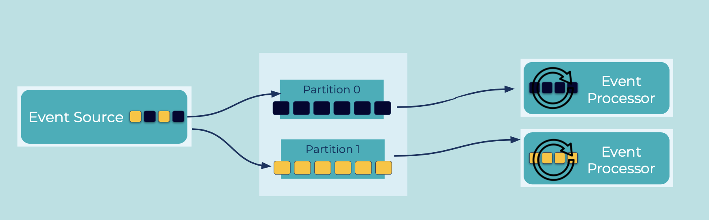

Partitioned Parallelism
If service goals mandate high throughput, it is useful to have the ability to distribute event storage as well as event production and consumption for parallel processing. Being able to distribute events and process them concurrently enables an application to scale.
Problem
How can we allocate events across Event Streams and Tables so that they can be processed concurrently by distributed Event Processors?
Solution

We should use a partitioned event stream, and then assign the events to different partitions of the stream. Essentially, a partition is a unit of parallelism for storage as well as reading, writing, and processing events. Partitioning helps concurrency and scalability in these main ways:
- Platform scalability: enables different Event Brokers to store and serve Events to Event Processing Applications concurrently
- Application scalability: enable different Event Processing Applications to process Events concurrently
Partitioning events also impacts application semantics: placing events into a given partition guarantees that the ordering of events is preserved, per partition (but typically not across different partitions of the same stream). This ordering guarantee is crucial for many use cases as, very often, the sequencing of events matters, e.g., when processing retail orders (an order must be paid before it can be shipped).
Implementation
With Apache Kafka®, streams (called topics) are created either by an administrator or by a streaming application like ksqlDB. The number of partitions is specified at the time the topic is created. For example:
ccloud kafka topic create myTopic --partitions 30
Events are placed into a specific partition according to the partitioning algorithm of the Event Source, such as an Event Processing Application. All events assigned into the same partition have strong ordering guarantees.
The common partitioning schemes are:
- Partitioning based on the event key (e.g., the customer ID for a stream of customer payments), where events with the same key are stored in the same partition
- Partitioning events round-robin across all partitions to achieve an even distribution of events per partition
- A custom partitioning algorithm, tailored to a specific use case.
If we are using a Kafka-based technology such as a Kafka Streams application or the streaming database ksqlDB, the processors can scale by working on a set of partitions concurrently and in distributed manner.
If an event stream's key content changes because of how the query wants to process the rows, for example to execute a JOIN operation in ksqlDB between two streams of events, the underlying keys are recalculated, and the events are sent to a new partition in the new topic to perform the computation (this internal operation is often called distributed data shuffling).
CREATE STREAM stream_name
WITH ([...,]
PARTITIONS=number_of_partitions)
AS SELECT select_expr [, ...]
FROM from_stream
PARTITION BY new_key_expr [, ...]
EMIT CHANGES;
Considerations
In general, a higher number of stream partitions results in higher throughput, and to maximize throughput, we want enough partitions to utilize all distributed instances of an Event Processor (e.g., servers in a ksqlDB cluster). Be sure to choose the partition count carefully based on the throughput of Event Sources (e.g., producers in Kafka, including connectors), Event Processors (e.g., ksqlDB, Kafka Streams applications), and Event Sinks (e.g., consumers in Kafka, including connectors), and to benchmark performance in the environment. Also take into consideration the design of data patterns and key assignments so that events are distributed as evenly as possible across the stream partitions. This will prevent certain stream partitions from getting overloaded relative to other stream partitions. See Streams and Tables in Apache Kafka: Elasticity, Fault Tolerance, and Other Advanced Concepts for further details on understanding and dealing with partition skew.
References
- The blog post How to choose the number of topics/partitions in a Kafka cluster provides helpful guidance for selecting partition counts for your topics.
- For another approach to processing parallelism that subdivides the unit of work from a partition down to an event or an event key, see the Confluent Parallel Consumer for Kafka.